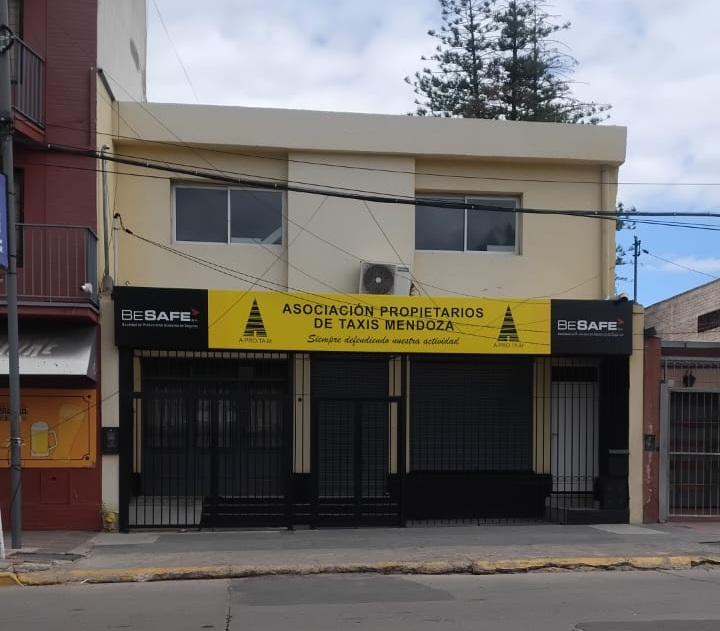
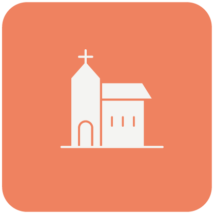

Bienvenidos a la iglesia Preparando el camino
Un lugar de fe, amor y restauración

📌CÓMO PONER MI VIDA EN ORDEN
Ezequiel 36:27
Pondré mi Espíritu en ustedes para que sigan mis decretos, obedezcan mis ordenanzas y las cumplan.
Vivir en el orden de Dios implica alinear la vida espiritual, familiar, financiera y personal con los principios bíblicos, permitiendo que el Espíritu Santo guíe cada área.
Colocar a Dios primero trae armonía a las demás áreas de la vida. Ordenar la vida comienza por la mente y el corazón, lo cual se refleja en nuestro accionar. El orden se logra siguiendo las instrucciones bíblicas y los decretos divinos, no solo nuestros deseos carnales.
Ordenar la casa y las finanzas es un testimonio de nuestra administración de los recursos divinos. Tenemos que reconocer las áreas en desorden y buscar la dirección de Dios. Permitir que el Espíritu Santo trabaje en el carácter para un cambio duradero.
Tenemos que aprender a establecer una disciplina espiritual diaria. Quiere decir que nadie puede pasar de una vida de desorden a una vida de orden sin la ayuda de Dios.
Salmo 37:23
Por Jehová son ordenados los pasos del hombre y Él aprueba su camino.
Dios tiene ordenanzas para nosotros. Ordenanzas: es una serie de instrucciones que te llevan al orden.
Dar honra al Espíritu Santo es parte de ese orden. ¿Cómo podemos tener comunión con el Espíritu Santo si pasamos el día sin tratar de comunicarnos con Él y establecer una relación íntima que vaya cambiando nuestra forma de ser y vivir?
Cuando voy a su presencia y le digo: Espíritu Santo, ven a mi vida, te necesito, ayúdame. Tenemos que conocerlo y pedirle ser su amigo. Solo conociéndolo como un amigo íntimo vamos a poder honrarlo.
El Espíritu Santo nos ayuda a poner nuestra vida en orden.
🙏🏼Oremos
Padre, gracias por comprender que aunque tengamos una vida desordenada podemos cambiar todo al recurrir al Espíritu Santo para pedirle ayuda y poner en orden todo lo que estaba mal, y en obediencia ser aprobados por ti. Amén!

Un espacio de adoración, comunión y crecimiento espiritual
Te invitamos a compartir cada semana junto a nuestra congregación, donde buscamos adorar a Dios, aprender de Su Palabra y crecer espiritualmente en comunidad.

Un camino hacia la sanidad y nueva vida
Ofrecemos un programa integral de recuperación basado en principios cristianos para personas que luchan con adicciones.

¡No podés faltar!
Emergente social: 20:00 Hs

Estudio Bíblico: 20:00 Hs
Reunión de Pre-Adolescentes: 18:30 Hs

Servicio Principal: 20:00 Hs
Juan B. Alberdi 135
Teléfono: (261) 596-0948
Email: signoreliraul42@gmail.com